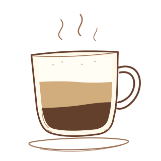
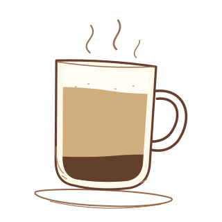
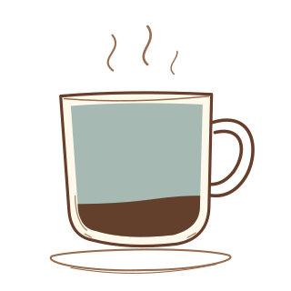
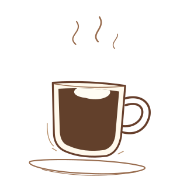
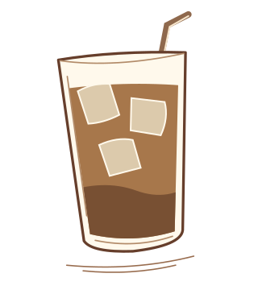

Under pressure
Espresso
Hot water is pushed through finely ground coffee under pressure. The result is a small, concentrated drink.
Find out what goes into your favorite coffee drinks, how they’re made, and how they’re served around the world.
Compare the drinksInside a cappuccino

Pressure, gravity, or time. Each method gives you a different starting point.
Under pressure
Hot water is pushed through finely ground coffee under pressure. The result is a small, concentrated drink.
Through a filter
Water passes through ground coffee and a filter. Gravity carries the brewed coffee into the pot below, making a larger, less concentrated cup than espresso.
Slowly steeped
Coffee steeps in cool water for several hours. After straining, serve it chilled. A concentrated batch can be diluted with water or milk.
Start with espresso. Change the milk, water, or foam.

More milk, a little foam
Mostly steamed milk, with espresso underneath and a thin layer of foam.
Espresso · Steamed milk · A little foam
Coffee with milk has a long history in Europe. The Italian name caffè latte means “milk coffee.” Pour steamed milk into espresso, then finish with a thin layer of foam.
A thicker layer of foam
The same ingredients as a latte, with a more noticeable layer of foam.
Espresso · Steamed milk · Milk foam
The cappuccino gets its name from the brown robes of Capuchin friars. For the espresso version popularized in Italy, pour steamed milk over a shot and finish with a generous layer of foam.

Espresso and hot water
Espresso diluted with hot water.
Espresso · Hot water
The Italian name caffè americano means “American coffee.” Add hot water to a shot of espresso until the drink reaches the strength you prefer.

Just a small mark of milk
Espresso with a small amount of foamed milk on top.
Espresso · A little foamed milk
This Italian espresso drink gets its name from the small amount of milk that “marks” it. Prepare a shot of espresso and add a spoonful of foamed milk.
The diagrams show approximate proportions. Cafés prepare these drinks in different ways.
Drag an ingredient into the cup, or select its button to add one part. Your cup holds six parts.
Drop ingredients here
Your cup is empty.
Compare three ways to make coffee served cold.

This version starts with hot brewed coffee and is chilled before serving.
Brewed coffee · Ice · Milk or sweetener, optional
Mazagran, a sweetened cold coffee from Algeria, is an early example. Brew coffee hot, let it cool, and pour it over ice.
Cold brew gets its flavor from several hours of contact between cool water and coffee grounds.
Ground coffee · Cool water
Cold brewing has a long history in Japan. Steep the grounds in cool water for several hours, strain them out, and serve the coffee chilled.
A Greek iced coffee with a thick, airy top made from instant coffee.
Instant coffee · Cold water · Ice · Sugar or milk, optional
The frappé became a staple of Greek café culture. Shake instant coffee with a little water and sugar if desired. Pour the foam over ice and add water or milk to taste.
Different ingredients, tools, and ways of serving.
Vietnam
This sweet Vietnamese coffee is served over ice. Brew it with a small metal filter called a phin, then stir the coffee into sweetened condensed milk.
Ground coffee · Hot water · Sweetened condensed milk · Ice
Turkey
This traditional method is common in Turkey. Heat very finely ground coffee and water in a small pot called a cezve. Pour it into a small cup and let the grounds settle.
Finely ground coffee · Water · Sugar, optional
Italy
An Italian dessert that pairs cold gelato with hot espresso. Pour a shot over a scoop of gelato just before serving. The name affogato means “drowned.”
Espresso · Gelato